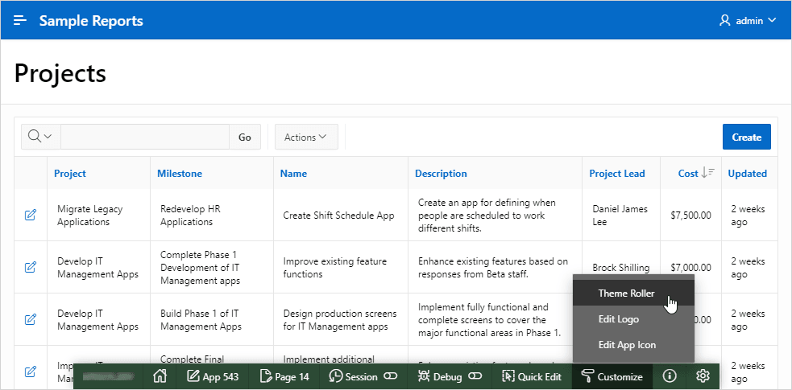
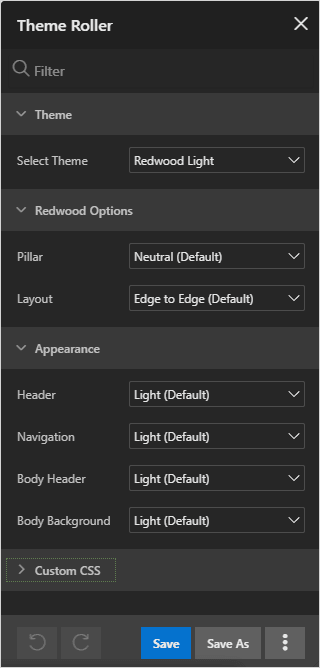
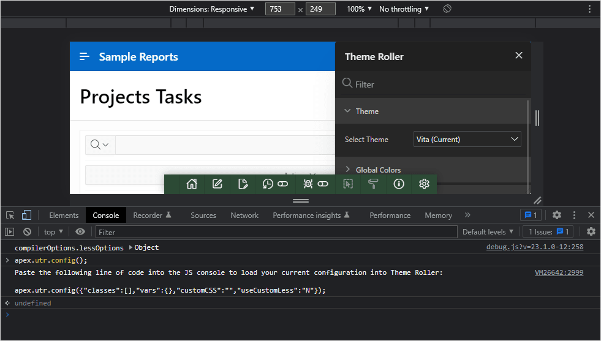

11.1.4 Using Theme Roller
Use Theme Roller to quickly transform the appearance of an application without editing any code.
- About Theme Roller
Learn about the Theme Roller option available on the Customize menu on the Runtime Developer toolbar. - Using the Theme Roller Dialog
Access the Theme Roller dialog by clicking Theme Roller from the Customize menu on the Runtime Developer toolbar. - About the Redwood Light Theme Style
The Redwood Light theme style features a number of unique class options in Theme Roller. - Importing and Exporting Theme Styles
Import and export theme styles by selecting Import and Export from the Theme Roller Additional Options menu. - Style Compatibility
Learn about Vita theme and Redwood Light theme compatibility issues. - About Developer Console Integration
Use the exposed functionapex.utr.config();in your web browser developer's console to get and set the custom CSS code and LESS compilation configuration
Parent topic: Using Themes
11.1.4.1 About Theme Roller
Learn about the Theme Roller option available on the Customize menu on the Runtime Developer toolbar.
Theme Roller is a live CSS editor that enables you to quickly change the theme style, colors, rounded corners and other application attributes.
When you run an application from App Builder and view a page, the Runtime Developer toolbar displays at the bottom of any editable running page. To access the Theme Roller dialog, click Theme Roller from the Customize menu.

Description of the illustration customize_menu.png
In order for Theme Roller to appear on the Runtime Developer toolbar:
- Theme styles must be defined.
- At least one theme styles must have the Input Parameter File URLs attribute defined.
Parent topic: Using Theme Roller
11.1.4.2 Using the Theme Roller Dialog
Access the Theme Roller dialog by clicking Theme Roller from the Customize menu on the Runtime Developer toolbar.
Note:
Concurrent use of the Live Template Options, Theme Roller, and Logo Editor is not supported.Tip:
Theme Roller displays on the Runtime Developer toolbar if theme styles have been defined and at least one theme styles has the Input Parameter File URLs attribute defined.Parent topic: Using Theme Roller
11.1.4.3 About the Redwood Light Theme Style
The Redwood Light theme style features a number of unique class options in Theme Roller.
-
Pillar - The Pillar class enables users to change the background and header images.
-
Layout - The Layout class enables users to switch the following layout options: Edge to Edge, Floating, or Contained.
-
Appearance - Attributes under Appearance include Header, Navigation, Body Header, and Background.
The following image shows Theme Roller with the Redwood Light theme style selected.

Description of the illustration theme_roller_redwood.png
Parent topic: Using Theme Roller
11.1.4.4 Importing and Exporting Theme Styles
Import and export theme styles by selecting Import and Export from the Theme Roller Additional Options menu.
You can export and import style changes directly from Theme Roller by selecting options from the Additional Options menu: Import, Export, and Reset. When importing and exporting, the supported file format is JSON.
To import and export Theme Styles:
Parent topic: Using Theme Roller
11.1.4.5 Style Compatibility
Learn about Vita theme and Redwood Light theme compatibility issues.
The Vita theme and Redwood Light theme are not currently compatible because their variables are not present in each other's theme files.
When an export from the Vita theme is imported into Redwood Light, no changes display because the Vita theme variables are not present in the Redwood Light theme. The same is true for the reverse scenario. When an export from Redwood Light is imported into the Vita theme, no changes display because the Redwood Light variables are not present in the Vita theme.
Parent topic: Using Theme Roller
11.1.4.6 About Developer Console Integration
Use the exposed function apex.utr.config(); in your web
browser developer's console to get and set the custom CSS code and LESS compilation
configuration
Use the exposed function apex.utr.config(); in your web browser
developer's console to get and set the custom CSS code and LESS compilation
configuration.
To get styles, write apex.utr.config() without parameters into
the console:
apex.utr.config();
Paste the following line of code into the JS console to load your current configuration into Theme Roller:
apex.utr.config({"classes":[],"vars":{},"customCSS":"","useCustomLess":"Y"});
Description of the illustration dev_console_1.png
To set styles, add less or css code in the customCSS object of the JSON configuration into the console:
apex.utr.config({"classes":[],"vars":{},"customCSS":"h1 { color: #111; font-family: 'Helvetica Neue', sans-serif; ... }", "useCustomLess":"Y"});The custom CSS will be added to the theme roller Code Editor and applied to the page automatically.
Parent topic: Using Theme Roller